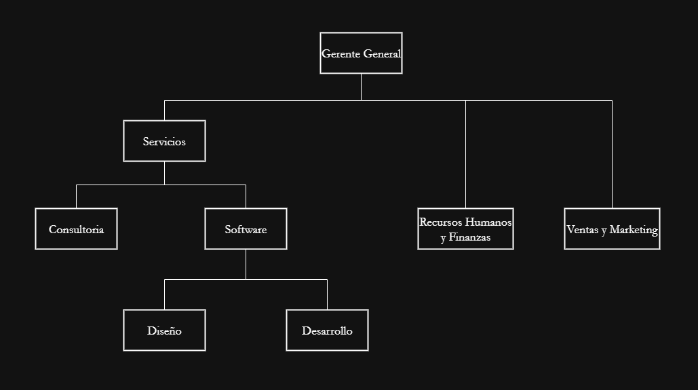

Organigrama
La estructura orgánica de SOFTCAT está diseñada para fomentar la colaboración y la innovación, asegurando que cada área cumpla con sus objetivos estratégicos.
Estructura Orgánica
Área Técnica
Desarrollar, mantener y asegurar la calidad de los productos digitales.
- Desarrollo de Software: Backend, Frontend, Base de datos
- Soporte y Mantenimiento: Mantenimiento, Atención de incidencias
- Calidad y Testing: QA, Testing
Diseño y Producto
Crear experiencias digitales innovadoras y usables.
- UX/UI, Prototipado
- Diseño Técnico: estructuras de datos & procesos
- Interfaces gráficas y optimización de procesos
Consultoría Estratégica
Asesorar en modelos de negocio y crecimiento sostenible.
- Validación de modelo
- Escalabilidad & Branding
- Análisis de mercado, market fit & competencia
Marketing y Comunicación
Posicionar nuestra marca con estrategias digitales.
- Branding, Publicidad & RRPP
- Estrategias digitales & contenido
- Comunicación interna & relaciones públicas
Comercial
Gestionar la relación con clientes y ventas.
- Prospecting & Ventas
- Atención al cliente & postventa
- Gestión de feedback
Administrativa
Administrar RRHH, finanzas y operaciones.
- RRHH: Reclutamiento, nóminas & cultura
- Finanzas: Contabilidad & presupuestos
- Operaciones: Materiales & logística